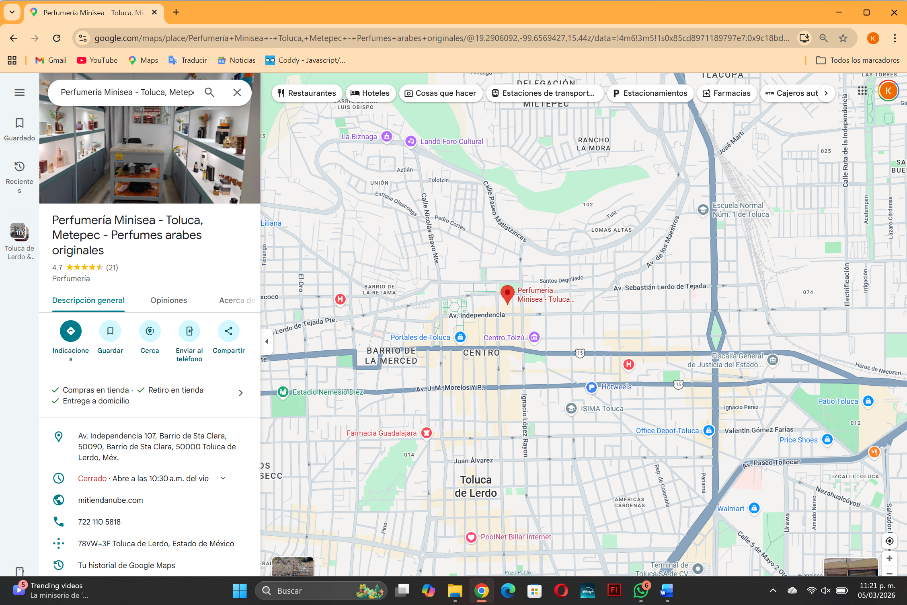

Ofrecemos a nuestros clientes una experiencia sensorial única a través de fragancias exclusivas y asesoría personalizada, realzando su bienestar y estilo de vida.
Visión
Convertirnos en la perfumería de referencia en la región, reconocida por la calidad de nuestros productos, la innovación en atención al cliente y el compromiso con la sostenibilidad.
Ubicación

Dirección física: Av Independencia #107, Barrio de Santa Clara, Toluca de Lerdo, México
Horario de atención: De Lunes a Sábado 9:00 am a 5:00 pm
Objetivo: Gestionar un pedido realizado por un cliente en el sitio web, asegurando la disponibilidad del producto y la entrega exitosa.
Cliente: Navega por el catálogo, utiliza el buscador por notas olfativas, añade productos al carrito y procede al checkout (registrado o invitado).
Sistema: Valida el stock disponible en tiempo real. Si no hay stock, bloquea la compra o sugiere recogida en tienda.
Cliente: Selecciona método de envío o recogida, elige pago (tarjeta, PayPal, etc.) y realiza el pago mediante pasarela segura.
Sistema: Registra el pedido como "Pendiente de pago". Al confirmarse el pago cambia a "Pagado", notifica al administrador y descuenta stock automáticamente.
Administrador: Revisa pedidos nuevos:
Envío a domicilio: genera guía, cambia estado a "Enviado" y registra seguimiento.
Recogida en tienda: prepara el pedido y cambia estado a "Listo para recoger".
Sistema: Notifica al cliente por correo los cambios de estado.
Cliente: Recibe el producto o lo recoge en tienda.
Cliente (postventa): Puede calificar o solicitar cambio/devolución.
Proceso 2: Gestión de Inventario (Tiempo Real)
Objetivo: Mantener un control preciso y actualizado del stock, evitando roturas y sobrecostes.
Recepción de mercancía: El vendedor registra la entrada (producto, cantidad, caducidad). El sistema incrementa el stock.
Venta online y en tienda:
Online: stock se descuenta al confirmar el pago.
Tienda: el vendedor descuenta manualmente en el punto de venta (integrado).
Stock mínimo: El sistema monitorea y alerta (visual y por correo) cuando se alcanza el nivel mínimo configurable.
Ajustes de inventario: El administrador puede realizar ajustes manuales por merma, robo o caducidad, registrando el motivo.
Proceso 3: Servicio Postventa (Devoluciones y Cambios)
Objetivo: Gestionar eficientemente las solicitudes post-compra.
Inicio: El cliente solicita (formulario web, correo o tienda).
Registro: Se vincula la solicitud al pedido original.
Evaluación: Se verifica si cumple la política:
Aprobada → se procede.
Rechazada → se notifica motivo.
Procesamiento:
Devolución: Nota de crédito o reembolso; se reintegra el producto al inventario (si es vendible).
Cambio: Se registra nuevo producto; si hay diferencia de precio se gestiona el pago; se intercambia stock.
Cierre: Se registra la resolución y se notifica al cliente.
Organigrama
Foto de las instalaciones
Metas del sistema y del proyecto
Metas del sistema
Automatizar el control de inventario, evitando roturas de stock.
Ofrecer una experiencia omnicanal: comprar online y recoger en tienda.
Personalizar recomendaciones basadas en historial y preferencias.
Integrar pasarela de pagos segura (tarjeta, PayPal, etc.).
Facilitar la gestión de pedidos y envíos a domicilio.
Metas del proyecto
Entregar el sitio web en un plazo de 3 meses.
Capacitar al personal en el uso del panel de administración.
Lograr al menos 100 pedidos mensuales en el primer semestre.
¿Cómo podrían mejorarse? (describir mejoras)
Antes: inventario en hojas de cálculo, propenso a errores. Mejora: base de datos en tiempo real que actualice el stock con cada venta.
Antes: clientes debían visitar la tienda para conocer novedades. Mejora: blog y boletín informativo con lanzamientos y consejos.
Antes: no se aprovechaban los datos de clientes. Mejora: CRM integrado para campañas de marketing segmentadas.